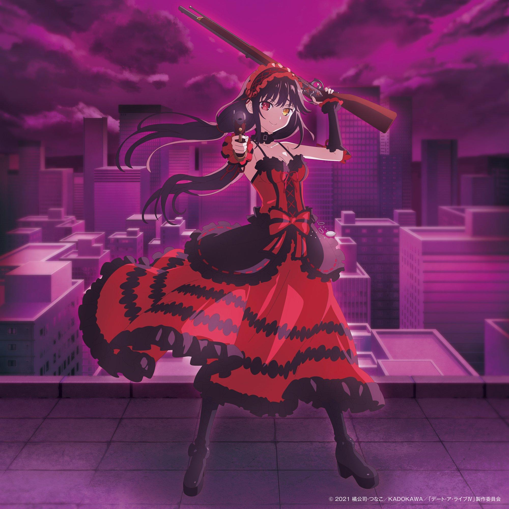
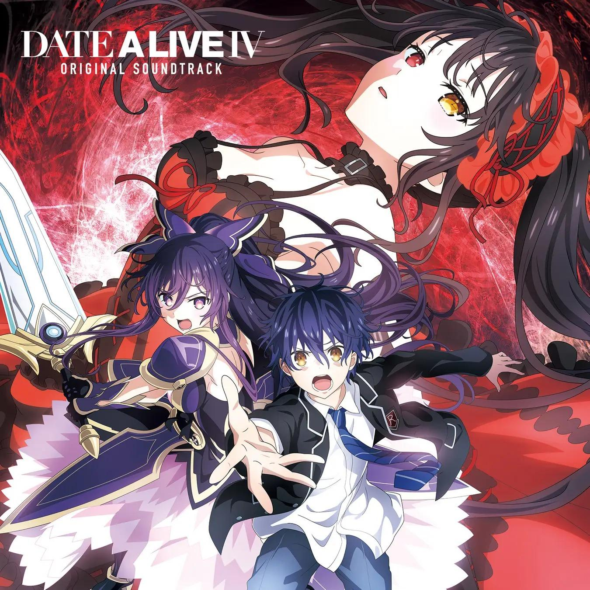
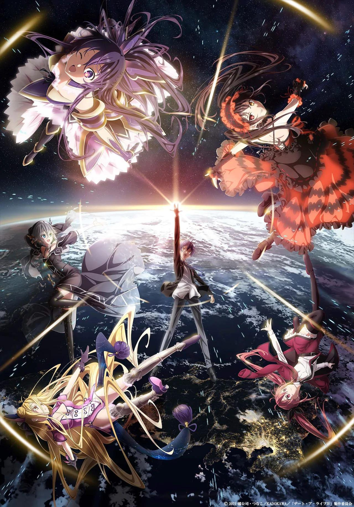

Kurumi Tokisaki protagoniza el nuevo avance del anime Date A Live
Un comunicado de prensa reveló el quinto video promocional para la cuarta temporada de la adaptación al anime de las novelas ligeras escritas por Koushi Tachibana e ilustradas por Tsunako, Date A Live. El video está protagonizado por el personaje Kurumi Tokisaki, interpretado a su vez por Asami Sanada, y revela la entrada hacia un nuevo arco argumental con el episodio “Nightmare’s Temptation”.
También se reveló una nueva imagen promocional para esta cuarta temporada, protagonizada también por Kurumi Tokisaki:
Finalmente, se reveló también la portada del álbum musical con la banda sonora de esta cuarta temporada, cuyo lanzamiento está programado para el próximo 29 de junio en Japón.
Esta cuarta temporada, que se encuentra en emisión desde el pasado 8 de abril y que tendrá un total de doce episodios, tenía su estreno programado para la temporada de Otoño-2021 (Octubre-Diciembre), pero fue retrasada debido a “varias circunstancias de producción“, mientras que la plataforma Crunchyroll se encarga de su distribución en Occidente. Por su parte, Tachibana y Tsunako publicaron las novelas ligeras originales a través del sello editorial Fujimi Fantasia Bunko de la editorial Fujimi Shobo entre marzo de 2011 y marzo de 2020, con un total de veintidós volúmenes.
Sinopsis de Date A Live
Hace treinta años, un extraño fenómeno llamado Terremoto Espacial devastó el centro de Eurasia, llevándose consigo la vida de más de 150 millones de personas. Desde entonces, menores terremotos espaciales se han ido manifestando alrededor del mundo. Shidou Itsuka, un estudiante de preparatoria aparentemente normal se encuentra con una chica en el epicentro de un terremoto espacial.
Es informado por su hermana Kotori que esta chica es uno de los espíritus que, al hacer acto de presencia en el mundo, son causantes de dichos terremotos espaciales. También se entera de que su hermana es la capitana de la nave Ratatoskr. Ella lo recluta con el fin de hacer uso de su misteriosa habilidad para sellar los poderes de los espíritus. Para así evitar que se vuelvan una amenaza para la humanidad. Sin embargo, hay un inconveniente. Para sellar los poderes de un Espíritu, Shidou deberá hacer que éste se enamore de él.